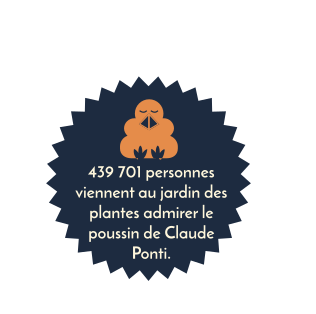
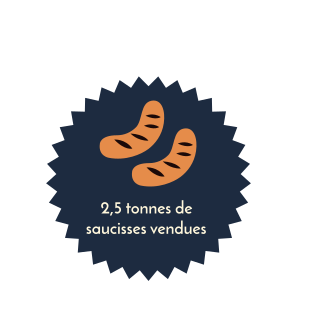
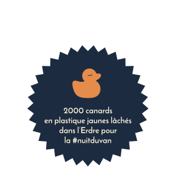

Durant l'été 2011,
Donatien voit arriver le voyage à Nantes : un parcours gratuit qui via la culture et le territoire de la métropole renforce le tourisme. C'est le début d'une nouvelle aventure ! Nantes souhaite dynamiser la période estival grâce au VAN.
Donatien voit arriver le voyage à Nantes : un parcours gratuit qui via la culture et le territoire de la métropole renforce le tourisme. C'est le début d'une nouvelle aventure ! Nantes souhaite dynamiser la période estival grâce au VAN.
« La ville contaminée par l'art »
Billetterie des Machines
(nombre de visiteurs)
En 2012,
C'est la création du parcours qui s'organise. Donatien suit d'abord la ligne rose, conductrice du voyage qui s'étale sur 12km. Il commence à parler du voyage autour de lui et cela interpelle ses amis de France, d'Espagne, d'Allemagne et du Royaume-Uni qui viennent passer le weekend à Nantes chez lui.
C'est la création du parcours qui s'organise. Donatien suit d'abord la ligne rose, conductrice du voyage qui s'étale sur 12km. Il commence à parler du voyage autour de lui et cela interpelle ses amis de France, d'Espagne, d'Allemagne et du Royaume-Uni qui viennent passer le weekend à Nantes chez lui.


Nombre de nuitées

« L'ensemble est une réussite tant artistique que touristique ! »
Un an plus tard,
Nantes est désigné comme la capitale verte. Donatien suit la ligne désormais verte.
Il peut aussi retrouver sa famille venue exprès de Bretagne
et de Vendée à la cantine du voyage, un lieu convivial et chaleureux.
Nantes est désigné comme la capitale verte. Donatien suit la ligne désormais verte.
Il peut aussi retrouver sa famille venue exprès de Bretagne
et de Vendée à la cantine du voyage, un lieu convivial et chaleureux.
En août 2013, 70 000 personnes passent leur séjour à Nantes contre 60 000 en 2012.
C’est la première fois depuis deux ans qu’il y a plus de monde en août qui passent une nuit à Nantes contrairement en octobre.

En 2014,
les premières retombées économiques et analyses de la notoriété régionale, nationale et internationale tombent. Le carrousel des mondes marins reçoit le prix de l'attraction la plus originale du monde par THEA awards à Los Angeles. Donatien est ravie : des blogueurs, influcenceurs et journalistes du monde entier s'intéressent à Nantes.
les premières retombées économiques et analyses de la notoriété régionale, nationale et internationale tombent. Le carrousel des mondes marins reçoit le prix de l'attraction la plus originale du monde par THEA awards à Los Angeles. Donatien est ravie : des blogueurs, influcenceurs et journalistes du monde entier s'intéressent à Nantes.

En 2015,
Donatien « marche sur la lune ». Le VAN accroît sa notoriété d'années en années. Grâce aux retombées de la presse et des réseaux sociaux, nombreux sont ceux qui viennent découvrir le parcours du VAN.
Donatien « marche sur la lune ». Le VAN accroît sa notoriété d'années en années. Grâce aux retombées de la presse et des réseaux sociaux, nombreux sont ceux qui viennent découvrir le parcours du VAN.
Chaque été,
Donatien participe aux attractions du VAN qui attirent de plus en plus de touristes. Le virus de la création est lancée : tout le monde s'y est mis, les commerçants et leurs enseignes détournés rue Maréchal Joffre, les restaurants et leurs terrasses en tout genre, jusq'aux designs des routes où s'entremêlent voitures et piétons.
Donatien participe aux attractions du VAN qui attirent de plus en plus de touristes. Le virus de la création est lancée : tout le monde s'y est mis, les commerçants et leurs enseignes détournés rue Maréchal Joffre, les restaurants et leurs terrasses en tout genre, jusq'aux designs des routes où s'entremêlent voitures et piétons.